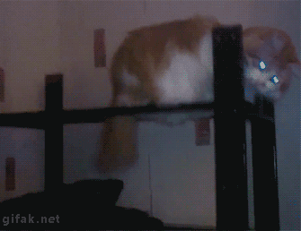

I start my work day between Monday-Friday by waking up at 7am. Once I am up, I get up and get ready for the day. I leave my house by 7:45 and I have a 20 minute drive to work. I start work at 9am with a break between 11am-12pm and the work day ending at 5pm.
I will be mainly communicating for work through my email: jjcapparell244@gmail.com
If I don’t respond, try my phone number on file.
I try my best to explain every idea presented in my code and will make an explanation to easily understand it.
I am the grumpiest when I am trying to understand something that I am learning. If I feel like I am just not getting it, I tend to get quiet and try to force my way into figuring it out.
If I were to give you feedback, I think it is much easier in person. I like to first ask if you need any help with anything you are currently working on. After I am on the same page, I will show what my work is like and explain how I got to where I am at and explain my thought process.
I like my feedback in person as well. I like to see a solution with an example to reference the problem I am having. I may ask for specifics about how that process works so I completely understand and can conceive that solution later.
I hope that I learn all I need to know for GitHub and Java, in order to collaborate well for future assignments.
If I am ahead in a project we are working on, I like to help explain to others how I got to the point I made it to. I like explaining in full detail so others can conceive that type of result later as well.
My favorite gif:
